Strava Live Generator
Distance
4.04 km
Pace
8:19 /km
Time
33m 36s

Masukkan Data Lari
Jarak (km)
Pace (e.g: 8:19)
Waktu (e.g: 33m 36s atau 01:20:15)
Salin Gambar Transparan
Unduh File PNG Transparan
Gambar transparan berhasil disalin!